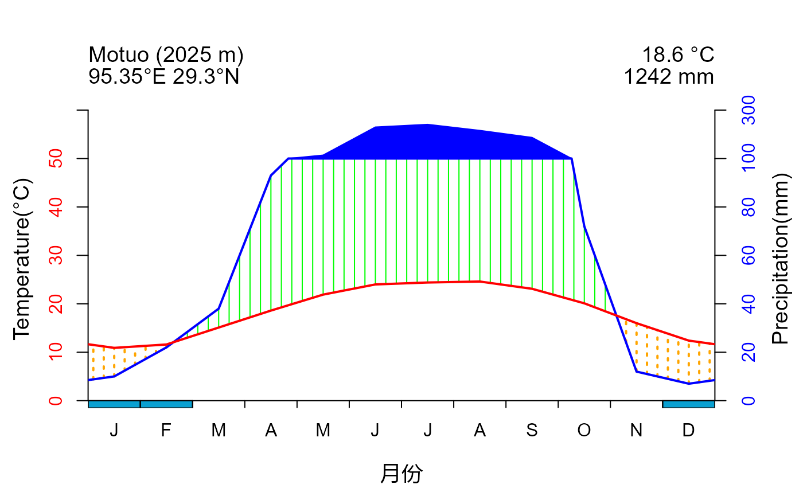

climplot: Facilitate and tailor Walter & Lieth climatic diagram construction
Auman Chan, PhD Candidate
2023-07-23
climplot_Intro.Rmd
climplot aims to collect crucial climate data for global locations and construct the Walter & Lieth climatic diagrams in a more user-friendly and personalized manner.
The main features of the package are:
- The use of worldwide climate data to obtain standardized and reliable data for constructing Walter & Lieth climatic diagrams
- The provision for more parameter to customize the plots and display comprehensive information
The package offers functions for:
- Obtain climate data to construct Walter & Lieth Climatic Diagram for global locations
- Construct the Walter & Lieth climatic diagram
- Revise the color scheme and information presentation of the diagram
Installing and loading
To install the latest developmental version from github and gitee, you will need the R package remotesand git2r. If you want
to see more help of this package, please add
build_vignettes= TRUE.
install.packages('remotes')
#from github
remotes::install_github("auman-chan/climplot")
#from gitee
install.packages('git2r')
remotes::install_git("https://gitee.com/auman-chan/climplot.git")
#add vignettes
remotes::install_github("auman-chan/climplot",build_vignettes= TRUE)
remotes::install_git("https://gitee.com/auman-chan/climplot.git",
build_vignettes= TRUE)
#add vignettes
remotes::install_github("auman-chan/climplot",build_vignettes= TRUE)
remotes::install_git("https://gitee.com/auman-chan/climplot.git",
build_vignettes= TRUE)Plotting data extraction
The task of searching for and processing climate data from multiple
locations is a challenging endeavor. Function clim_extract
can retrieve data derived from Worldclim Historical monthly weather data
in 2010-2019(Version of 2.5 minutes, https://worldclim.org/data/monthlywth.html), which be
ready for diagrams visualization.
Data preparation
Climate data download
The climate data provided by Worldclim is indispensable, however, due to its global-scale raster layer format, the file size are substantial and cannot be accommodated within the package. Therefore, kindly obtain the climate dataset from Figshare before use.
The dataset comprises of four folders and a total of 48 .tif files, which include annual average minimum temperature, annual average maximum temperature, annual average precipitation, and annual extreme minimum temperature. These values are calculated by taking the monthly averages and minimizations within 2010-2019. The structure of the dataset is illustrated in the table below:
## X annual_average_maximum_temperature annual_average_minimum_temperature
## 1 1 tmax_01.tif tmin_01.tif
## 2 2 tmax_02.tif tmin_02.tif
## 3 3 tmax_03.tif tmin_03.tif
## 4 4 tmax_04.tif tmin_04.tif
## 5 5 tmax_05.tif tmin_05.tif
## 6 6 tmax_06.tif tmin_06.tif
## 7 7 tmax_07.tif tmin_07.tif
## 8 8 tmax_08.tif tmin_08.tif
## 9 9 tmax_09.tif tmin_09.tif
## 10 10 tmax_10.tif tmin_10.tif
## 11 11 tmax_11.tif tmin_11.tif
## 12 12 tmax_12.tif tmin_12.tif
## annual_average_precipitation annual_extreme_minimum_temperature
## 1 prec_01.tif extmin_01.tif
## 2 prec_02.tif extmin_02.tif
## 3 prec_03.tif extmin_03.tif
## 4 prec_04.tif extmin_04.tif
## 5 prec_05.tif extmin_05.tif
## 6 prec_06.tif extmin_06.tif
## 7 prec_07.tif extmin_07.tif
## 8 prec_08.tif extmin_08.tif
## 9 prec_09.tif extmin_09.tif
## 10 prec_10.tif extmin_10.tif
## 11 prec_11.tif extmin_11.tif
## 12 prec_12.tif extmin_12.tifLocation information preparation
In order to extract climate data for specific locations, precise
coordinates are essential. Additionally, the diagram should display
other relevant information such as location names and altitudes.
Therefore, a data.frame containing information of the target locations
is necessary for clim_extract. The imported data.frame must
contain five columns in the following order:
- No: Serial number of the locations
- location: Abbreviation of the locations
- lon: Longitude of the locations in decimal digit (negative numbers indicating west longitude)
- lat: Latitude of the locations in decimal digit (negative numbers indicating south latitude)
- altitude: Altitude of the locations
The data locdata in this package can be a example of the
import data.frame. Other extra columns with information is allowed
behind the columns above, but would be discarded in following
process.
## # A tibble: 10 × 6
## No location lon lat altitude name
## <dbl> <chr> <dbl> <dbl> <dbl> <chr>
## 1 1 Motuo 95.4 29.3 2025 墨脱县仁钦崩寺
## 2 2 Wulianshan 100. 24.5 1301 无量山自然保护区
## 3 3 Wawushan 103. 29.5 2082 四川省眉山市洪雅县瓦屋山
## 4 4 Leibo 103. 28.4 1204 四川省凉山州雷波县
## 5 5 Longcanggou 103. 29.6 1764 四川省雅安市荥经县龙苍沟国家森林公园
## 6 6 Jinfoshan 107. 29.0 1917 重庆市南川区金佛山国家级自然保护区
## 7 7 Xishui 106. 28.3 863 贵州省习水良村镇羊化村
## 8 8 Tonglingshan 120. 27.8 724 浙江省铜铃山国家森林公园
## 9 9 Qinglongshan 113. 23.2 320 广东省鼎湖山自然保护区的百丈岭、青龙…
## 10 10 Tiantongshan 122. 29.8 199 浙江省天童山Extraction of climate data
After preparing the climate dataset and location information, import the data.frame and path of three climate datasets, this function will export a data.frame.
#Modify the path of yours
a <- "G:/climplot/climdata/tmin"
b <- "G:/climplot/climdata/tmax"
c <- "G:/climplot/climdata/prec"
#extraction of climate data
plotdata <- clim_extract(locdata,a,b,c)
}## # A tibble: 30 × 18
## No Altitude Location Lon Lat Type `1` `2` `3` `4` `5`
## <dbl> <dbl> <chr> <dbl> <dbl> <chr> <dbl> <dbl> <dbl> <dbl> <dbl>
## 1 1 2025 Motuo 95.4 29.3 precip… 10.1 21.0 44.9 98.9 137.
## 2 1 2025 Motuo 95.4 29.3 min.te… -1.10 0.600 3.70 7.20 11.2
## 3 1 2025 Motuo 95.4 29.3 max.te… 12.3 13.8 16.5 19.2 22.7
## 4 2 1301 Wulianshan 100. 24.5 precip… 18.0 7.16 20.4 37.6 60.4
## 5 2 1301 Wulianshan 100. 24.5 min.te… 6.80 8.5 11.8 15.2 18.2
## 6 2 1301 Wulianshan 100. 24.5 max.te… 21 24.1 26.7 29 30.1
## 7 3 2082 Wawushan 103. 29.5 precip… 7.88 8.52 24.0 59.9 101.
## 8 3 2082 Wawushan 103. 29.5 min.te… -5.20 -3.60 0 4.30 7.70
## 9 3 2082 Wawushan 103. 29.5 max.te… 4 6.10 10.4 14.7 17.2
## 10 4 1204 Leibo 103. 28.4 precip… 9.54 9.82 24.9 59.4 90.1
## # ℹ 20 more rows
## # ℹ 7 more variables: `6` <dbl>, `7` <dbl>, `8` <dbl>, `9` <dbl>, `10` <dbl>,
## # `11` <dbl>, `12` <dbl>The exported data.frame includes 5 kinds of information of
locations(as which in the data.frame import), and values of 3 kinds of
climate factors across 12 months. An export data.frame stores in the
data plotdata of this package, as an example of the
function export.
To include the frosty months in subsequent plots, it is necessary to
extract the extreme minimum temperature for each location. Set the
parameter Frost from FALSE to TRUE, and provide the path of
the dataset containing annual extreme minimum temperatures
#Modify the path of yours
a <- "G:/climplot/climdata/tmin"
b <- "G:/climplot/climdata/tmax"
c <- "G:/climplot/climdata/prec"
d <- "G:/climplot/climdata/extmin"
#extraction of climate data
plotdata <- clim_extract(locdata,a,b,c,Frost = TRUE,d)
}## # A tibble: 40 × 18
## No Altitude Location Lon Lat Type `1` `2` `3` `4` `5`
## <dbl> <dbl> <chr> <dbl> <dbl> <chr> <dbl> <dbl> <dbl> <dbl> <dbl>
## 1 1 2025 Motuo 95.4 29.3 precip… 10.1 21.0 44.9 98.9 137.
## 2 1 2025 Motuo 95.4 29.3 min.te… -1.10 0.600 3.70 7.20 11.2
## 3 1 2025 Motuo 95.4 29.3 max.te… 12.3 13.8 16.5 19.2 22.7
## 4 1 2025 Motuo 95.4 29.3 extrem… -2 -1 2 7 11
## 5 2 1301 Wulianshan 100. 24.5 precip… 18.0 7.16 20.4 37.6 60.4
## 6 2 1301 Wulianshan 100. 24.5 min.te… 6.80 8.5 11.8 15.2 18.2
## 7 2 1301 Wulianshan 100. 24.5 max.te… 21 24.1 26.7 29 30.1
## 8 2 1301 Wulianshan 100. 24.5 extrem… 6 8 11 15 17
## 9 3 2082 Wawushan 103. 29.5 precip… 7.88 8.52 24.0 59.9 101.
## 10 3 2082 Wawushan 103. 29.5 min.te… -5.20 -3.60 0 4.30 7.70
## # ℹ 30 more rows
## # ℹ 7 more variables: `6` <dbl>, `7` <dbl>, `8` <dbl>, `9` <dbl>, `10` <dbl>,
## # `11` <dbl>, `12` <dbl>In this mode, the data.frame export includes 5 kinds of information
of locations(as which in the data.frame import), and values of 4 kinds
of climate factors among 12 months. The annual extreme minimum
temperature are included as a new row of every location. An export
data.frame of this mode stores in the data plotdata_Frost
of this package, as an example of the function export.
Hereto clim_extact have obtained all essential
information for the Walter & Lieth climatic diagram plotting.
Climatic diagram Plotting
The function clim_plot can construct the Walter &
Lieth climatic diagram plotting in different styles of color scheme and
information presentation. It refers to the function
diagwl()of a CRAN package climatol.
Walter & Lieth climatic diagram plotting of a single location
Take the data plotdata and plotdata_Frost
as an example, and import them into clim_plot.
In the figure above:
The red curve represents the annual variation of temperature, and blue one represents of precipitation variation. These two curves form two types of patches indicating humidity and aridity levels. The string-filled patches represent humid seasons while those with scattered points represent arid seasons. The polygon filled with the color same as precipitation curve indicates months with precipitation over 100mm, displaying the wet season period.
The information on the left top includes the name, the altitude and the coordinates of the locations. The right top are the values of annual mean temperature and mean precipitation.
Solution to plot for serveral location
clim_plotonly supports constructing diagrams for one
location at a time, as we recommend checking each plot individually, and
importing multiple vectors of climate data increases the risk of errors.
Therefore, if you require automated plotting for several locations,
utilizing a loop is recommended:
Other tips of climatic diagram plotting
Plotting the frosty months

The blocks with light blue color on x-axis represent the months with potential frost, and the dark blue ones mean those with confirmed frost.
Color and axis modification
The color and the axis labels could be customized to meet specific requirements.
It is possible to adjust the colors of temperature, precipitation, humidity, aridity, wet season patches and frosty month blocks.
loc <- subset(plotdata_Frost,No==1)
clim_plot(loc,pcol = "#8DB6CD",tcol = "#FF6A6A",wcol="#4EEE94",dcol = "#EEB422",pfcol="#00BFFF",sfcol="#8A2BE2",ShowFrost = TRUE)
Additionally, the display of axis labels can be controlled and custom
labels can be imported using parameters ylabel,
ylab1, ylab2 mlab and
xlab .
loc <- subset(plotdata_Frost,No==1)
clim_plot(loc,xlab="月份",mlab = "en",ylabel = TRUE,ylab1 ="Temperature(\U{00B0}C)",ylab2 ="Precipitation(mm)",ShowFrost = TRUE)
Reference
Guijarro J A (2023). climatol: Climate Tools (Series Homogenization and Derived Products), 4.0.0., https://CRAN.R-project.org/package=climatol.
Fick, S.E. and R.J. Hijmans, (2017). WorldClim 2: new 1km spatial resolution climate surfaces for global land areas. International Journal of Climatology 37 (12): 4302-4315.
Harris, I., Osborn, T.J., Jones, P.D., Lister, D.H. (2020). Version 4 of the CRU TS monthly high-resolution gridded multivariate climate dataset. Scientific Data 7: 109.
Walter H & Lieth H (1960): Klimadiagramm Weltatlas. G. Fischer, Jena.